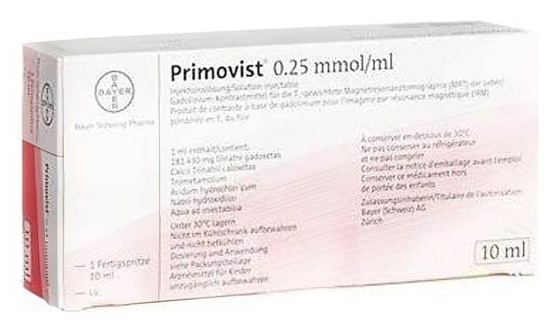

Primovist 0,25 mmol/ml Enjeksiyon İçin Çözelti İçeren Kullanıma Hazır Enjektor, 1 Adet

Ne için kullanılır
KT · Bölüm 1• PRIMOVIST, 10 mL çözelti içeren kullanıma hazır enjektör şeklinde bulunur. Çözelti, görünür partikül içermeyen berrak, renksiz ila soluk sarı renktedir. • PRIMOVIST
her bir mL’de 181,43 mg gadoksetat disodyum içerir. • PRIMOVIST karaciğerin manyetik rezonans (MR) görüntülenmesinde kullanılan bir kontrast maddedir. Karaciğerde bulunabilecek değişiklikleri tespit etmeye ve teşhis etmeye yardımcı olmak için kullanılır. Karaciğerdeki anormal belirtiler (örn. sayı, boyut, ve dağılım ve görsellik açısından) daha iyi değerlendirilebilir. PRIMOVIST ayrıca herhangi bir anormalliğin yapısının belirlenmesinde doktora yardımcı olur ve böylelikle tanısal güvenilirliğini artırır. Bu tıbbi ürün, yalnızca damar yoluyla tanısal kullanım içindir. • Manyetik rezonans görüntüleme (MRG), normal ve anormal dokularda su molekülleri tespit edildikten sonra resimler oluşturan bir tıbbi teşhis görüntüleme şeklidir. Bu, karmaşık bir manyetik ve radyo dalgaları sistemi kullanılarak yapılır.